Sharing work online with Quarto & GitHub Pages
We can create beautiful websites that describe complex technical analyses in Python using Quarto and deploy them online using GitHub Pages. This combination of tools is a really powerful way to create and share your work.
Quarto
- Quarto is a relatively new tool, but is becoming popular quickly.
- It’s the successor to the Rmarkdown ecosystem from the Rstudio team
- It combines functionality into a single tool and also extends its computation power to other languages.
- Most importantly for us, Quarto supports executing Python code, allowing us to convert Jupyter notebooks to HTML and share them online.
- You supports building multiple types of online content, including websites, blogs, and books.
GitHub Pages
- GitHub Pages is static website generator that can be used to automatically generate a website from any GitHub repository.
- We’ll use it to deploy our website content generated using Quarto
- Even though GitHub Pages is a static site (no server to execute code), it can embed interactive charts and maps and maintain the interactive functionality
Quarto + GitHub Pages is very cool, and allows you to build very complex websites. The main website for this course is developed using Quarto + GitHub Pages!
For the final project, you’ll be asked to publish a Quarto website using GitHub pages that describes your analysis and results.
The example Quarto site
I’ve set up a working example website so we can walk through the main features of Quarto. It will help us learn the basics of Quarto and serve as a reference, along with Quarto documentation, as you start to customize your own site.
And the published site is available at: https://musa-550-fall-2023.github.io/quarto-website-template/
Let’s start by exploring the different parts of the site.
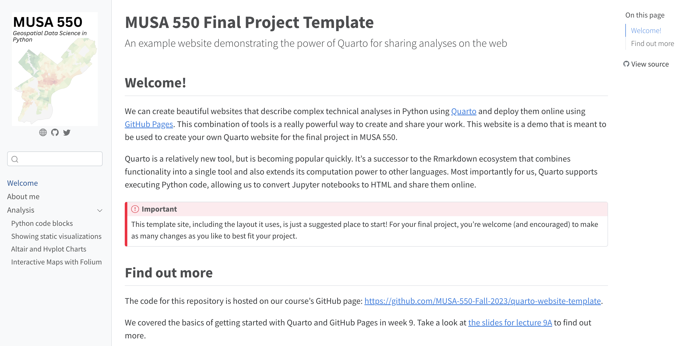
In particular, we see a sidebar with three main parts:
- The main home page entitled “Welcome”
- And about page
- An “analysis” section with several sub-sections
The website’s repo
Let’s go to this website’s GitHub repository: https://github.com/MUSA-550-Fall-2023/quarto-website-template.
Let’s explore the different filenames first. Many of the files line up with the content we saw above displayed on the rendered website. These have red arrows marking them in the image below.
You’ll see the “analysis” folder and the rest in this site are .qmd files, which are special Quarto-flavored markdown files. They primarily contain Markdown text but can also (optionally) include executable code blocks (such as Python or R). The index.qmd is the home page. If you click inside “analysis” you’ll see a mix of file types, including .ipynb Jupyter notebook files and a .qmd markdown file.
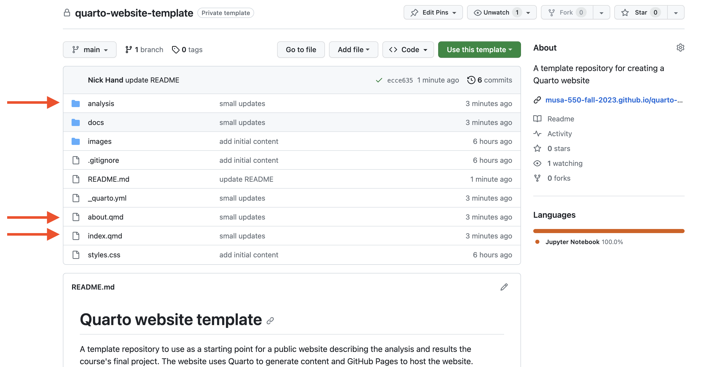
The “docs” folder has all of the rendered HTML content that gets used to show the final website. The content matches all of the content in the input .qmd and .ipynb files, but these files have been processed by Quarto into HTML to be displayed in the browser.
The _quarto.yml configuration file
There is also a _quarto.yml file, which is the website’s configuration file. It is essentially metadata for the website that sets up the layout of the site and includes the order that the pages will be in. This is where you update the organization of your website: which page comes before another. If we compare side-by-side, you’ll see that the pages that appear on our website are listed there.
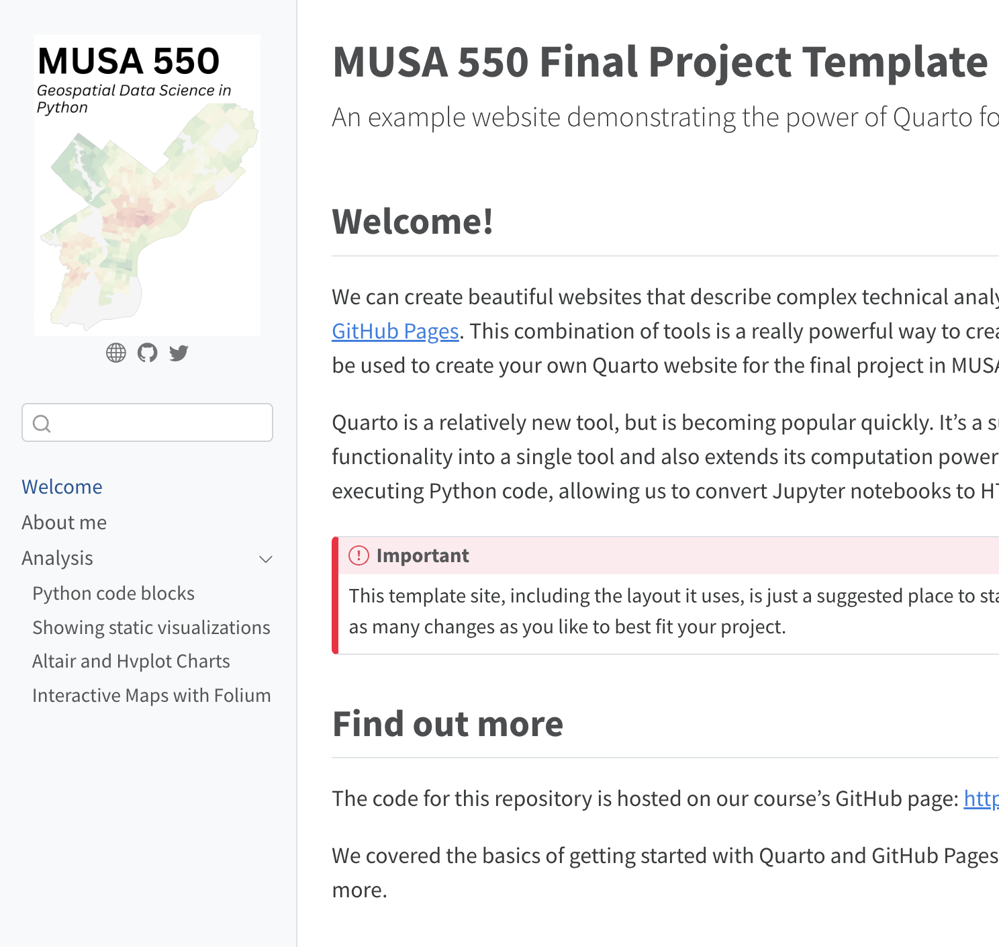 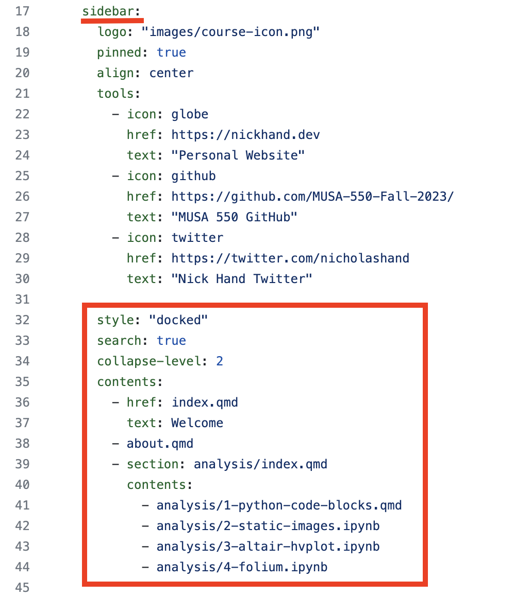
Notice that there are multiple ways in the _quarto.yml for you to include a file in your website. Let’s take a closer look at the “contents” key, nested under the “sidebar” key.
In the above image, the “Welcome” page we see in the left sidebar of the published website (left image) is represented in _quarto.yml (right image) over two lines, with line 36 indicating the file reference (index.qmd) and line 37 indicating the text to show up in the left sidebar (Welcome). However, all of the other files (either .qmd or .ipynb) are just represented by a single line.
This represents two strategies for including a file in your website. By default, the title of a specified file will show up in the website’s sidebar, which is what is happening with most of the files in the sidebar. If you would like more control over what is written in the sidebar vs. the title of your files, then the approach we took with “Welcome” is what you’ll want to do: you’ll see that only “Welcome” shows up in the sidebar as we specified in _quarto.yml, but the page’s title says “MUSA 550 Final Project Template” (which I thought was too long for the sidebar).
This type of file (.yml or .yaml) is written in YAML (“Yet Another Markup Language”). In this language, spacing and indentation matters. Pay attention to whether text is indented by one, two, four, or other spaces, and make sure you follow it; if your site is not looking as expected it is likely a silent error in your YAML.
Let’s explore the rest of the file:
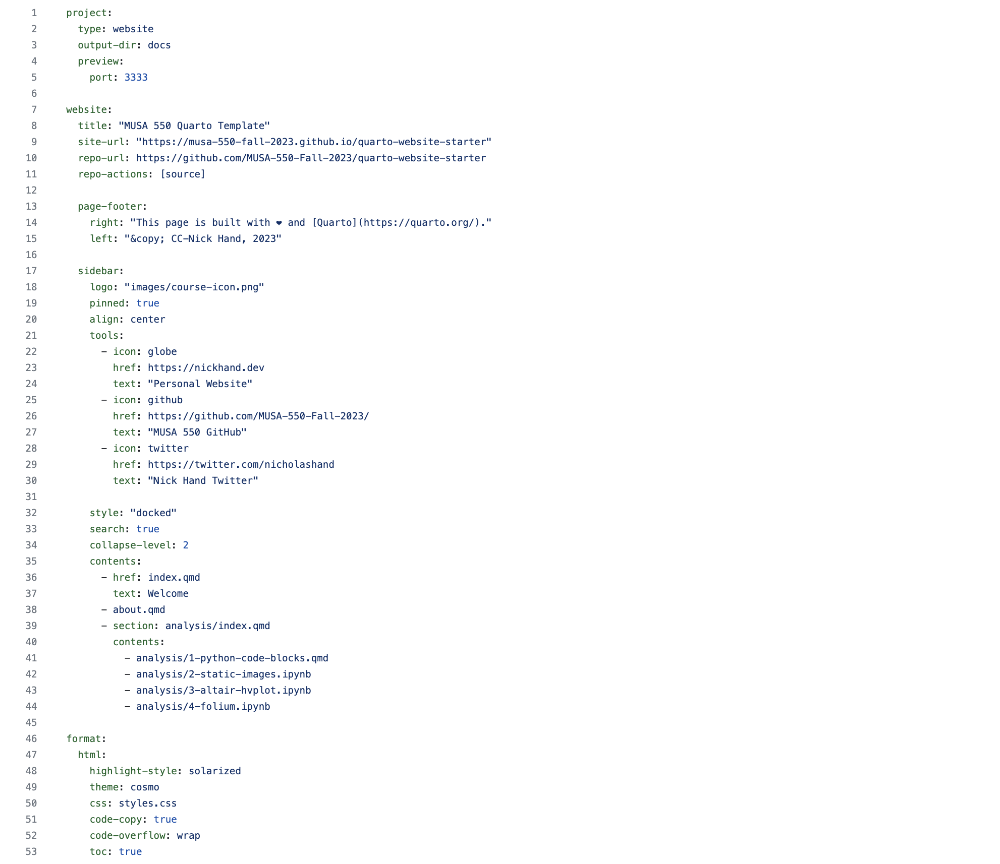
A few key things to know:
- The “project” section tells Quarto to build a website and put the rendered output HTML in the “docs” folder
- The content under the “website” key customizes the different parts of the website
- You can customize the title, site-url, and repo-url to match your repository
- Under “page-footer”, you can also customize the footer to say whatever you’d like
- Under “sidebar”, you can customize the logo that shows up in the sidebar and the icons that show up below it as well
- You should set the “contents” under “sidebar” to match the desired organization of your website
- The “html” key under “format” sets some sensible defaults for how the HTML content should look. These defaults affect all pages, but you can change them for any particular page on the website.
Adding technical content
You’ll notice in the “analysis” folder of the repo there are three Jupyter notebook files and a .qmd file.
There are two main ways to embed Python code (and its associated output) in a Quarto website:
- By directly using
.ipynb files. Quarto will execute all cells in the file and convert to HTML.
- By including a Python code block in the
.qmd markdown file directly.
In many ways, .ipynb and .qmd files are very similar — you can think of them as a mix of Markdown text and executable Python code!
1. Hiding code cells
For example, in the first cell of the 3-altair-hvplot.ipynb notebook file, we have a Markdown cell that hides all code via the echo: false option:
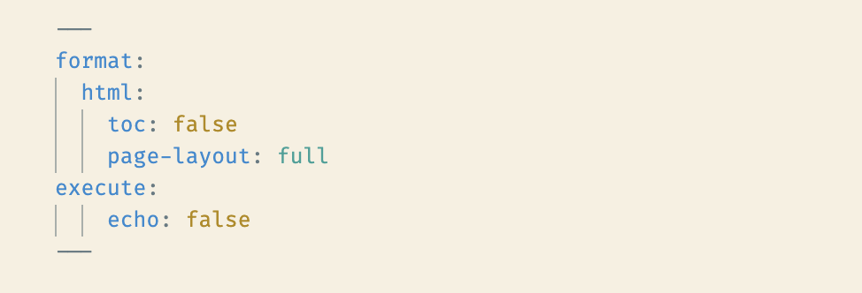
But you can hide individual code cells from showing up in the output using a special comment in the cell:
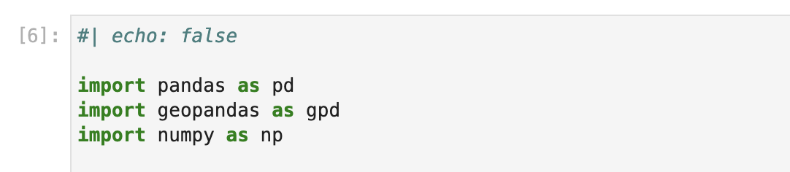
2. Folding code cells
Similarly, you can “echo” the code block’s content but “fold” it such that readers need to click an arrow to show the code block:
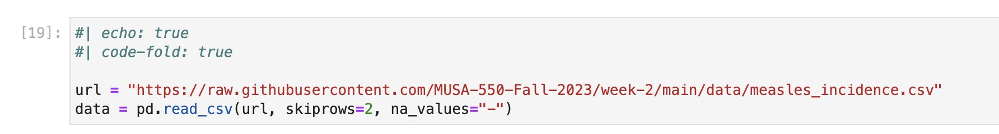
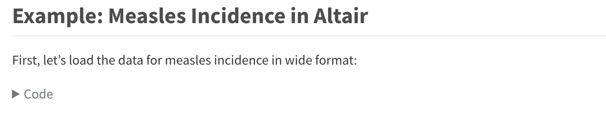
Starting from a template
The example website we’ve been discussing today is a template repository. This means that you can use the template to get a completely independent copy of the repository under your own username. From then on, you can make any changes you’d like without affecting the original repository.
Let’s walk through the steps for creating your own copy.
Step 1: Create your own repository
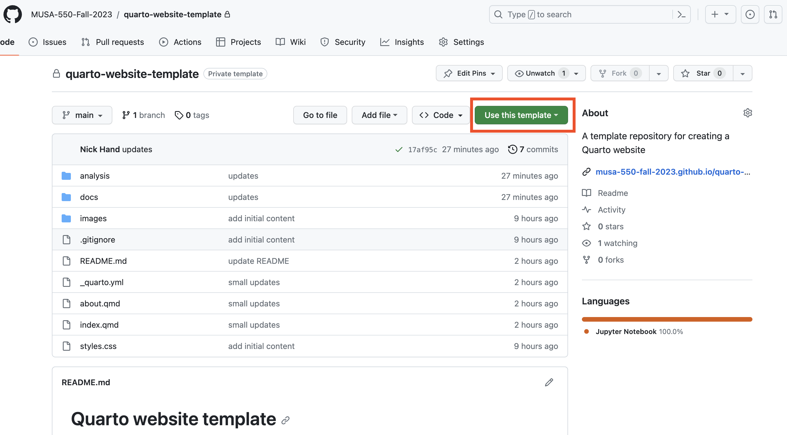
Step 2: Choose a name and description
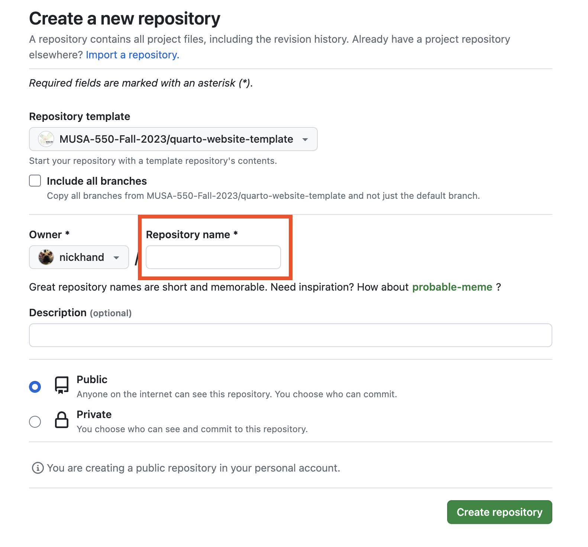
Step 3: Set up the repository to deploy via GitHub Pages
If you have a repository with content rendered via Quarto, deploying via GitHub Pages is easy.
First, make sure the “output-dir” key under “project” in your _quarto.yml file is set to “docs”. This ensures that the content for your rendered site is stored in the “docs” folder. Note: This is already set up in the template repository
Then, go to the “Settings” tab for your repository, and turn on GitHub Pages on the “main” branch and tell it to use the “docs” folder.
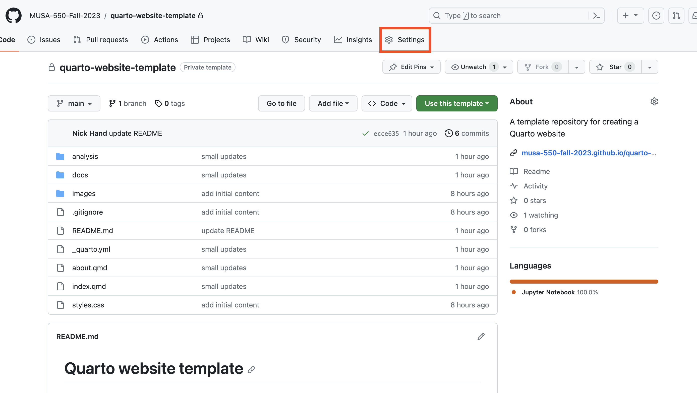
Click on the Pages button in the left sidebar, and under “Build and Deployment” make sure you are building from the “main” branch and “docs” folder.
This will automatically build the website at the following URL: https://[USERNAME].github.io/[REPOSITORY NAME]
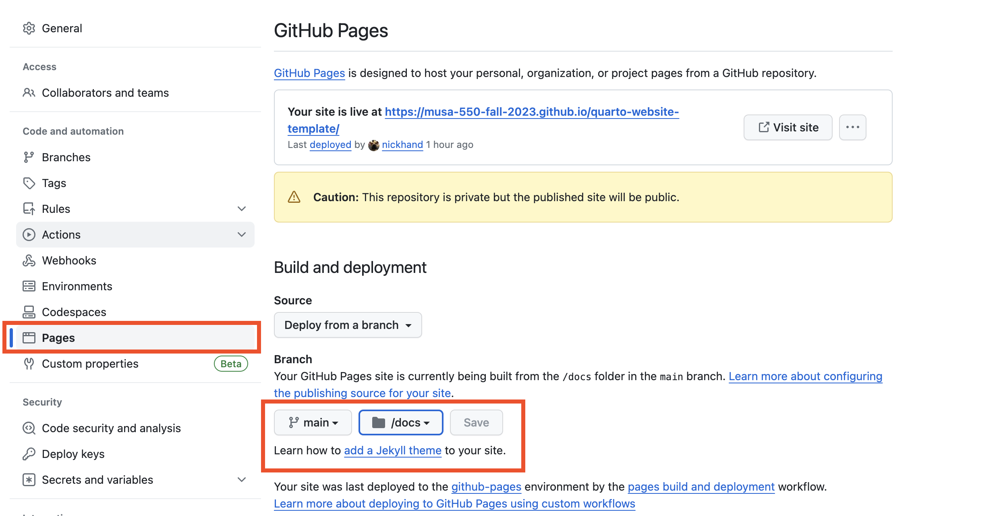
The editing workflow
Now, let’s talk about how to make edits and customize the template repository! Since we’re most familiar with Jupyter notebook files, my suggested workflow is:
- Clone or download your repository content from GitHub to your local computer.
- Author content in JupyterLab: write Markdown text, code, etc. JupyterLab will support editing both
.qmd and .ipynb files.
- Update
_quarto.yml as needed (for example, if you’ve created a new file you’d like included in your site)
- Render individual files and/or the whole website using quarto.
- Iterate and repeat as necessary.
- Commit and push your new website content back to GitHub, your updates will publish automatically!
For this workflow, you’ll need to install both Quarto and Git (via GitHub Desktop). We’ll set these up and try it out in the exercise today.
Exercise: Set up your own Github Pages project page
The goal of this exercise is to make a copy of the template repository, make some small changes, render the new site, and deploy via GitHub pages. We’ll need to do the following:
Step 1: Install Quarto
The site https://quarto.org/docs/get-started/ describes how to install Quarto, which will depend on your operating system.
After following the installation instructions, you can test your installation by opening your command line (Terminal in Mac OS or Miniforge Prompt in Windows) and running:
This should print out the help message for the quarto command.
Step 2: Install GitHub Desktop
We’ll be rendering our site content with the quarto command locally on our computer, which will generate lots of new changes in the “docs” folder of the website’s repository. We’ll then need to commit all of those changes to our version history, and push them to GitHub. It will be easiest to do this using the GitHub Desktop application.
If you don’t have GitHub Desktop installed yet, you can download and install it here: https://desktop.github.com/
Step 3: Create your own repository
- Use the above instructions to create your own copy of the template repository.
- Then, open the repository locally by clicking on the “<> Code” button and choosing the “Open in GitHub Desktop” option
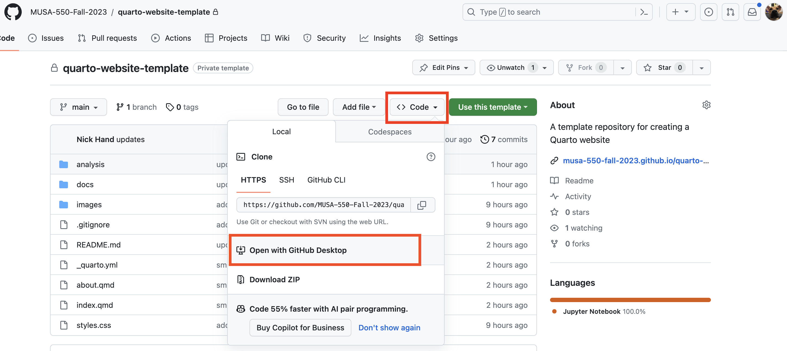
Step 4: Make some edits
First, find out the path for the downloaded repository and launch JupyterLab: - In GitHub Desktop, find out the path for the downloaded code by using the option to “Open in Explorer” or “View in Finder.” This should give you the file path of the downloaded repository. - Navigate to that folder, activate our course’s environment, and launch JupyterLab.
Then, make some edits: - In JupyterLab, make changes to your _quarto.yml to update the name, repository info, etc. - Add a Jupyter notebook file with some example code and add it to the _quarto.yml file.
Step 5: Preview your changes
You can launch a local version of your website to preview your changes. There are three steps involved:
Step 1. First, launch a new Miniforge Prompt (Windows) or Terminal (Mac OS) window. Navigate to the folder for your Quarto website.
Step 2. From the command line, activate our course environment by running: mamba activate musa-550-fall-2023
Step 3. From the command line, run the following command: quarto preview .
This should open a new tab in your browser with URL localhost:3333 that will show a live preview of your site. You can make edits to the files in JupyterLab and the live preview will update automatically!
Step 6: Render your website
Once you’re satisfied with your site via the preview, it’s time to render the full website. This create a fresh set of rendered content in the “docs” folder, which will contain all of the code necessary to deploy your website online.
Once again, there are three steps involved:
Step 1. First, launch a new Miniforge Prompt (Windows) or Terminal (Mac OS) window. Navigate to the folder for your Quarto website.
Step 2. From the command line, activate our course environment by running: mamba activate musa-550-fall-2023
Step 3. From the command line, run the following command: quarto render .
Now, we’re ready to push changes to GitHub and deploy!
Step 7: Commit and push your changes
After the last step, we have updated content that we need to commit and push to GitHub. We’ll do that in GitHub Desktop. The steps involved are:
- Open your repository in GitHub Desktop.
- You should see a number of local changes – this is the content we just generated when we rendered the site. We’ll need to commit these changes so they are saved in the repository’s version history. To do that, you can follow these instructions. You’ll need to write a commit message and hit the “Commit to main” button in the lower left part of GitHub Desktop.
- Now, we’ll sync these changes with GitHub by pushing the changes. Instructions for how to do that are available here
Once you push your changes, your repository will automatically update the deployed website!